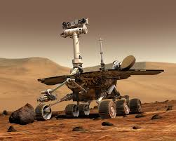

History of Space Exploration
Space exploration is the ongoing discovery and exploration of celestial structures in outer space by means of continuously evolving and growing space technologies. This history spans many milestones and breakthroughs, from the early days of the space race to modern-day explorations of other planets and moons in our solar system. Here, we highlight several major achievements in space exploration: the Apollo 11 Moon landing, Sputnik's launch, the ISS, Curiosity Rover, and the Mars Rover missions.
Apollo 11 Mission: The First Moon Landing
The Apollo 11 mission, conducted by NASA, was a historic moment for humanity, marking the first time that humans landed on the Moon. The mission's spacecraft, launched on July 16, 1969, was crewed by three astronauts: Neil Armstrong, Buzz Aldrin, and Michael Collins. Armstrong and Aldrin became the first humans to walk on the lunar surface on July 20, 1969, while Collins remained in lunar orbit aboard the command module, Columbia.
The event was watched by millions around the world, and Armstrong’s famous words, “That’s one small step for [a] man, one giant leap for mankind,” still resonate in history today. The astronauts collected rock samples, planted the American flag, and set up scientific instruments. The mission lasted 8 days, 3 hours, 18 minutes, and 35 seconds, and it was the first of six successful Moon landings under NASA’s Apollo program.
Apollo 11 not only demonstrated the United States' technological prowess but also showcased the collaborative spirit of humanity. It paved the way for further lunar exploration and inspired generations of scientists, engineers, and explorers to look beyond our planet.
Additional key facts about Apollo 11:
- The Saturn V rocket used to launch Apollo 11 remains the tallest and most powerful rocket ever built.
- The Lunar Module, nicknamed “Eagle,” was used for the Moon landing, while the Command Module was named “Columbia.”
- The total mission cost was approximately $355 million (equivalent to over $2 billion today).
Soviet Union's Sputnik: The First Artificial Satellite
Sputnik 1 was the first artificial Earth satellite, launched by the Soviet Union on October 4, 1957. It marked the beginning of the space age and triggered the space race between the Soviet Union and the United States. Sputnik weighed 83.6 kg (183.9 lbs) and transmitted radio signals back to Earth for 21 days before its battery was depleted. It remained in orbit for several months before it re-entered Earth's atmosphere and burned up on January 4, 1958.
The launch of Sputnik had a profound impact on science, technology, and geopolitics. It sparked international concerns about the possibility of Soviet technological superiority, leading to the establishment of NASA and a series of new space programs in the U.S. The event also led to the development of satellite communication, weather forecasting, and GPS systems.
Additional key facts about Sputnik:
- Soviet Union launched Sputnik using the R-7 rocket, which was originally designed as a missile.
- The success of Sputnik spurred the development of the U.S. Explorer satellite program, which launched the first successful American satellite into space in January 1958.
- Sputnik's launch is considered one of the most significant achievements of the Cold War era.
International Space Station (ISS): A Global Collaboration in Space

The International Space Station (ISS) is a space station that orbits the Earth, serving as a microgravity and space environment research laboratory. The ISS is a joint project involving five participating space agencies: NASA (USA), Roscosmos (Russia), ESA (Europe), JAXA (Japan), and CSA (Canada). It has been continuously inhabited by astronauts since November 2, 2000, making it one of the longest-running space missions.
The ISS is used for scientific research in a variety of fields, including biology, physics, astronomy, and meteorology. Its orbit allows for the study of the effects of microgravity on living organisms and the development of new technologies that can benefit life on Earth. The station also plays a crucial role in preparing for future deep-space missions, including those to Mars.
Additional key facts about the ISS:
- The ISS orbits the Earth at an average altitude of about 420 kilometers (260 miles) and travels at speeds of approximately 28,000 km/h (17,500 mph).
- The station is made up of pressurized modules for crew living and working, as well as external structures for solar arrays and scientific instruments.
- The ISS has hosted astronauts from over 19 different countries and remains a symbol of international collaboration in space.
Curiosity Rover: Exploring Mars
Launched on November 26, 2011, the Curiosity Rover is part of NASA's Mars Science Laboratory mission. It landed on Mars on August 6, 2012, and its goal was to explore the Gale Crater and investigate whether Mars had ever supported microbial life. Curiosity is equipped with a variety of tools, including a drill, lasers, and cameras, to analyze the Martian surface and collect data for future human exploration.
One of Curiosity’s most significant discoveries was the evidence of ancient water flows on Mars. The rover also found signs of organic molecules, which are the building blocks of life. The data collected by Curiosity has provided scientists with valuable insights into the planet’s past climate and geology.
Additional key facts about Curiosity:
- Curiosity is powered by a radioisotope thermoelectric generator (RTG), which provides energy for the rover's instruments and allows it to continue functioning during long Martian nights.
- The rover has sent back thousands of images, helping to create detailed maps of Mars' surface.
- Curiosity’s success paved the way for later missions, such as the Perseverance rover, which is currently on Mars.
The Mars Rover Missions: Exploring the Red Planet
The Mars Rover missions have been some of the most successful and fascinating robotic explorations of the Red Planet. These rovers are part of NASA's ongoing efforts to understand the Martian surface and determine its potential for life. The first rover, Sojourner, was part of the Mars Pathfinder mission and landed on Mars in July 1997. It was the first successful landing of a mobile robotic vehicle on another planet.
The success of Sojourner set the stage for future missions, and subsequent rovers like Spirit, Opportunity, Curiosity, and Perseverance have made groundbreaking discoveries about Mars. These rovers are equipped with a variety of scientific instruments designed to analyze the planet's soil, atmosphere, and geology.
The Mars rovers are equipped with cameras, drills, and other tools to collect data, analyze rock and soil samples, and even send back high-resolution images of Mars' terrain. One of the most significant discoveries made by the rovers is evidence of ancient water on Mars, which may suggest that the planet could have supported microbial life in the past.
Additional key facts about the Mars Rover program:
- The rovers have traveled thousands of miles on Mars, far exceeding their initial expected lifespan in most cases.
- Perseverance is the most advanced rover to date and carries a small helicopter, Ingenuity, which has performed multiple successful flights on Mars.
- The rovers have provided valuable data that will help plan for future human missions to Mars.